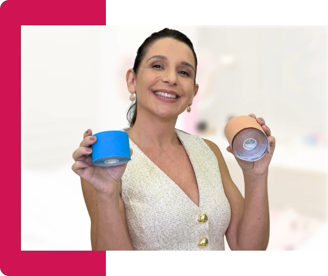
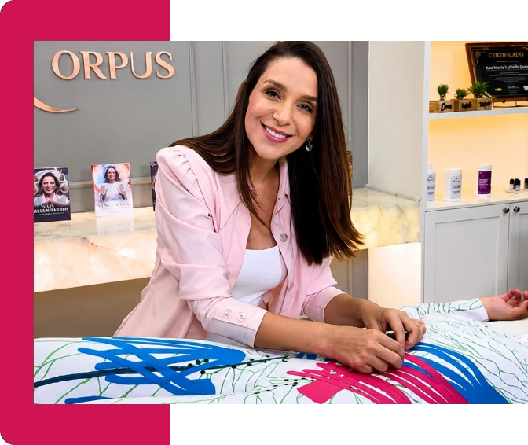
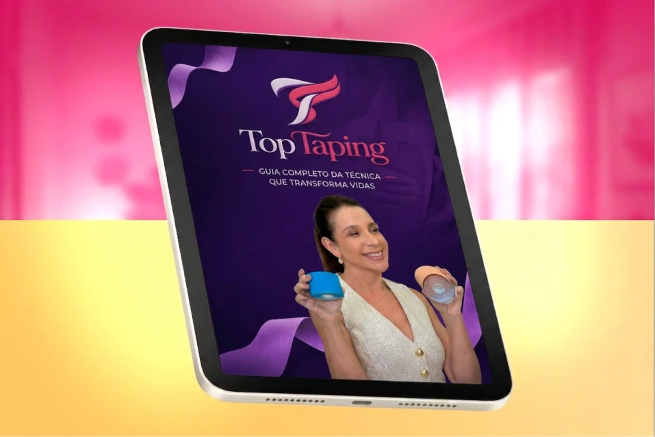
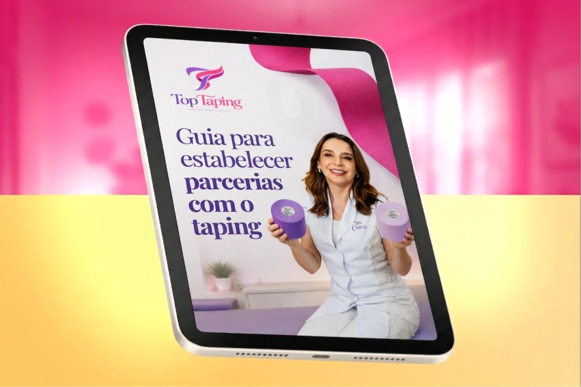
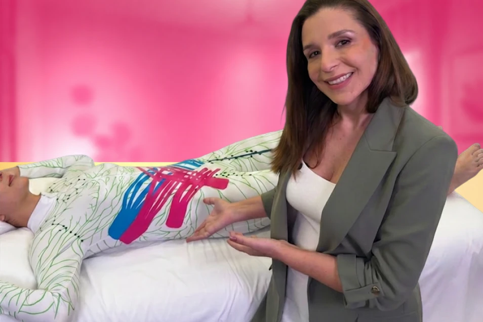

A fitinha que vai aumentar o valor da sua sessão e te fazer ser uma referência indicada por médicos.
Seja disputada pelos melhores profissionais da sua cidade com o diferencial que 90% das massoterapeutas ainda não dominam.
- Garantia 15 dias
- Acesso 1 ano
- Compra segura
- Garantia incondicional de 15 dias
- 6 módulos · 43 aulas práticas
- Taping analgésico
- Taping estético
- Taping intra e pós-operatório
- Mais de 30 aplicações na prática
- 6 bônus inclusos
- Certificado de conclusão
- Acesso por 1 ano
Bônus exclusivo por tempo limitado
2 anos de acesso
O diferencial
Uma fita baratinha é um diferencial que vale ouro!
A sua massagem humanizada já entrega resultados incríveis para a sua cliente.
Mas e se você pudesse fazer os resultados durarem mais?
- E se você pudesse tirar a dor da sua paciente sofrendo com dores crônicas por mais tempo?
- Ou continuar drenando a sua paciente com linfedema?
- Ou ainda, acelerando a recuperação de uma paciente que passou por uma cirurgia?
Com o Método TopTaping a sua sessão não vai ser apenas uma hora de massagem.
Vai ser um tratamento prolongado por até 7 dias.
Como funciona na prática
Suas mãos continuam trabalhando por você, mesmo depois que a cliente vai embora
 1
1
Sessão de massagem humanizada + aplicação do taping seguindo o Método TopTaping
 2
2
Cliente vai embora com o taping ativo
 3
3
Resultado visível por até 7 dias. Ela volta e te indica.
Parcerias médicas
Esses são os resultados que os médicos procuram!
Cirurgiões plásticos precisam de profissionais de confiança para indicar a seus pacientes no pós-operatório.
E a massoterapeuta que domina o taping nas áreas mais procuradas é a profissional que entra nessa lista.
“Um médico te indicando para os pacientes dele é a melhor forma de ter clientes todos os dias.”
Prova real
O que dizem as alunas que já aplicam o Método TopTaping


O conteúdo
O que você vai aprender no curso TopTaping?
O Curso TopTaping é um curso completo para você dominar a aplicação de taping em 3 áreas muito lucrativas:
Taping analgésico
Alivia dores musculares e articulares. Seu cliente sente diferença no dia seguinte.
Taping estético
Melhora a drenagem linfática, reduz diástase, trata cicatrizes. Resultados visíveis por dias.
Taping intra e pós-operatório
Acompanha a recuperação cirúrgica. Faz de você a profissional que o médico recomenda.
Módulo a módulo
Dentro do curso você ainda vai aprender:

Toda a parte teórica sobre a aplicação de taping para você entender de uma vez como essas fitinhas produzem efeitos tão incríveis.

Raciocínio clínico para você aprender como aplicar as fitinhas do jeito certo para cada caso: não basta colar fitinha, tem que colar do jeito certo.

Dicas práticas para você aplicar o taping com mais segurança e confiança desde a primeira sessão, sem erro e sem improviso.

Mais de 30 aplicações de taping na prática: cervical, torácica, lombar, glúteo, braços, panturrilha, abdominoplastia, lipoaspiração, drenagem linfática e muito mais. Pensou em um caso, lá dentro você encontra.

Aplicação passo a passo para as 3 áreas que mais se beneficiam do taping: estética, analgésica e intra e pós-operatória.

E como cobrar e oferecer o taping dentro dos seus atendimentos para fazer a sua sessão valer mais!
Tudo incluso
E ainda vai receber bônus especiais!
Bônus 1
Uma Cartilha de recomendação para os pacientes com orientações prontas para você só imprimir e entregar às suas pacientes ao final da sua sessão.
Isso mostra cuidado e atenção com quem confiou em você!

Bônus 2
Uma Apostila Digital do curso com o guia completo de aplicação do taping para você consultar sempre que precisar tirar alguma dúvida rápida.

Bônus 3
Um Guia para Estabelecer Parcerias Médicas com o Taping com tudo que você precisa fazer para ser a referência procurada pelos médicos.
Eu te entrego as mensagens prontas para você só enviar!

Bônus 4
Para você se posicionar como uma especialista e fazer todas suas futuras clientes te conhecerem pela aplicação de taping, eu te entrego o seu marketing pronto!
Um pacote de posts prontos para você só publicar ou enviar para sua rede de contatos.
Bônus 5
Um Guia de Cortes de Taping com os 6 cortes essenciais, cada um com sua função e moldes em tamanho real, para você nunca mais ter dúvida na hora de cortar e garantir que o taping funcione do jeito certo desde a primeira aplicação.

Bônus 6
Novo módulo - Taping no pós-parto com aulas exclusivas para você aprender a aplicar o taping na gestação e na recuperação pós-parto, e ser a profissional mais procurada pelas mamães e indicada pelos obstetras da sua região.

Reconhecimento
Receba o certificado de conclusão do curso com seu nome
Tenha nas suas mãos o reconhecimento e habilitação no Método TopTaping, para tratamento com Taping nas áreas estética, analgésica e intra e pós-operatória.
A condição de hoje
Qual o valor do seu investimento?
Você pode adquirir o curso TopTaping a qualquer momento pelo valor de R$ 997.
Esse é o valor real para você dominar a aplicação de taping nas 3 áreas mais lucrativas da massagem e se tornar uma referência muito bem remunerada.
Mas, hoje você tem uma oportunidade única: uma condição especial para alunas TopCorpus.
Hoje, você pode garantir o seu curso TopTaping com:
- 6 módulos com 43 aulas práticas e objetivas
- Raciocínio clínico completo
- Aplicação prática de taping intra e pós-operatório, analgésico e estético
- Aplicação prática de taping para linfedema
- BÔNUS 1: Apostila completa com guia de aplicação prática de taping
- BÔNUS 2: Cartilha de recomendação para suas pacientes
- BÔNUS 3: Guia para Estabelecer Parcerias Médicas
- BÔNUS 4: Marketing Pronto — Pacote de posts de divulgação do Taping
- BÔNUS 5: Guia de Cortes do Taping Elástico
- BÔNUS 6: Novo módulo — Taping no Pós-parto
- Garantia incondicional de 15 dias
- Acesso por 1 ano
De R$997 por apenas:
12x R$67,91
ou R$ 697 à vista
Ser uma massoterapeuta completa e referência em tratamento com taping custa menos que uma pizza por mês.
- Garantia 15 dias
- Compra segura
Risco zero
Mais Garantia de Satisfação
Se por qualquer motivo você sentir que o Curso TopTaping não é pra você, basta entrar em contato em até 15 dias e devolvemos 100% do seu investimento.
É isso mesmo, mulher. Não são 7 dias, são 15!
Sem perguntas. Sem burocracia. E continuamos amigas!
Eu confio tanto no Método TopTaping que te dou o dobro do tempo convencional para você entrar no curso, testar tudo, conseguir suas primeiras clientes e se mesmo assim você achar que não é pra você, tudo bem.
Você recebe tudo de volta. Você não tem nada a perder, mulher!
Apenas uma nova habilidade para ser uma profissional mais completa.

Sua professora
Quem vai te ensinar?
Eu, Ana Martha, fisioterapeuta dermatofuncional com quase 20 anos de carreira e mais de 50.000 massoterapeutas formadas pelo maior curso online no Brasil, o Curso TopCorpus, em parceria com a Faculdade Brasília, uma faculdade credenciada no MEC.
Minha missão é transformar as massoterapeutas humanizadas em referências completas e bem pagas.
Por isso, o TopTaping é o próximo nível dentro do universo TopCorpus para fortalecer a formação das minhas alunas.
Com o TopTaping, eu vou fazer as alunas TopCorpus serem indicadas e procuradas por médicos por serem especialistas neste tratamento que as massoterapeutas comuns ainda não dominam.
Vamos juntas!
Tire suas dúvidas
Perguntas Frequentes
Como funciona a garantia incondicional de 15 dias?
Você terá acesso a todo conteúdo por 15 dias, poderá assistir a TODAS as aulas, imprimir a apostila e tirar as suas dúvidas embaixo das aulas.
Se, por algum motivo, achar que esse curso não é para você, eu devolvo o seu investimento e continuamos amigas!
Quanto posso ganhar por aplicação de taping?
Um rolo de taping custa em média R$ 20,00. E você pode usar por quase por 10 sessões. Você pode cobrar entre R$ 50 e R$ 150 por aplicação, além do valor da sua sessão de massagem. No curso, eu te ensino como precificar de forma estratégica.
Preciso ter equipamentos especiais?
Não. O único material necessário é o rolo de bandagem elástica. Acessível, leve e fácil de transportar, perfeito para quem atende em domicílio também.
Funciona para quem mora em cidade pequena?
Funciona especialmente bem. Cidades pequenas têm menos concorrência, quando você domina o taping, você se torna a única referência da região.
Por quanto tempo tenho acesso ao curso?
1 ano completo. 100% online, assistido no computador, tablet ou celular, quantas vezes quiser.